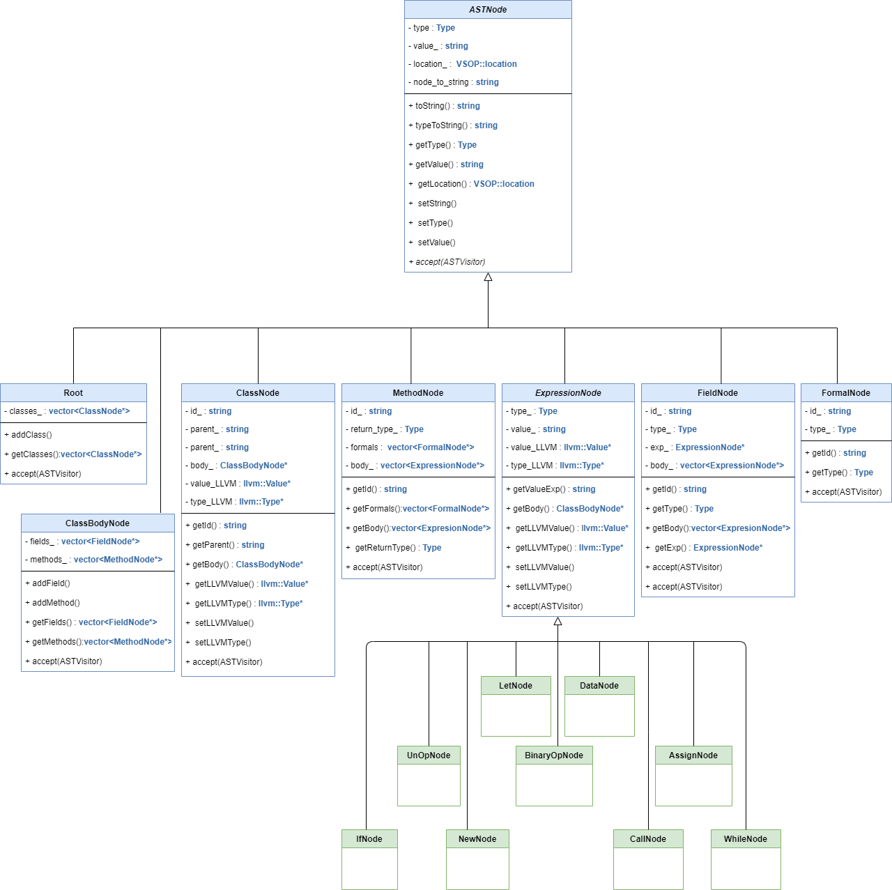
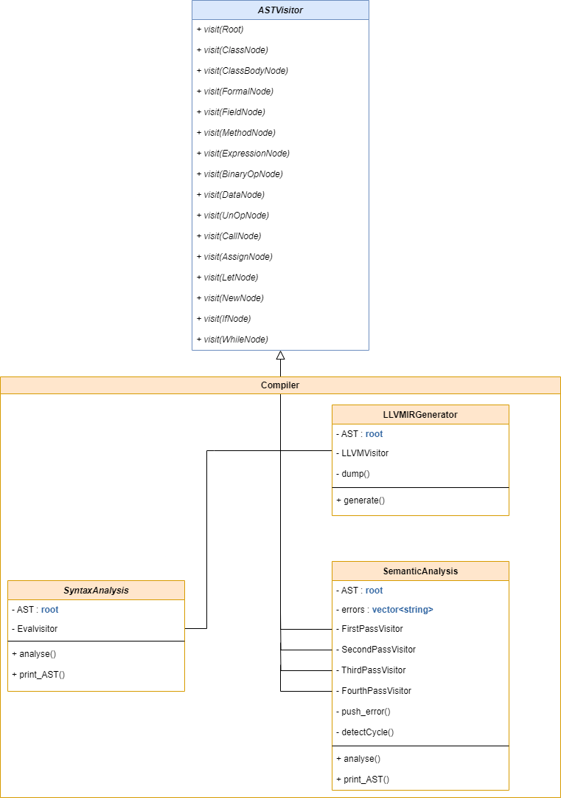

vsopcompiler – Compiler for VSOP Language
C++
Flex (Lex)
Bison (Yacc)
LLVM
Makefile
Project Summary
The vsopcompiler project is a complete compiler developed for the VSOP (Very Simple Object Programming) language. Written in C++, it handles every major compilation stage — from lexical and syntax analysis to semantic checks and LLVM IR code generation. The compiler transforms high-level VSOP programs into optimized, executable LLVM code.

System Architecture
- Lexical Analysis: Implemented in Flex, scanning the source code and converting it into a stream of tokens (keywords, identifiers, operators, literals). Includes robust error handling and literal validation.
- Syntax Analysis: Implemented with Bison, using grammar rules to construct an Abstract Syntax Tree (AST). The parser defines operator precedence and associativity to manage ambiguities efficiently.
- Semantic Analysis: Multi-pass traversal of the AST using the Visitor Pattern. Type checking, inheritance validation, and class hierarchy analysis are performed in separate modular passes.
- Code Generation: Using the LLVM API, the compiler emits LLVM Intermediate Representation (IR). Each node in the AST maps to IR instructions, with vtable creation for dynamic dispatch and virtual methods.
Core Features
- Implements a full compilation pipeline: lexing, parsing, semantic checks, and code generation.
- Supports inheritance, polymorphism, and type safety through multi-pass semantic analysis.
- Generates LLVM IR code that can be compiled to native machine code using
clang or llc.
- Handles advanced concepts like vtables, dynamic dispatch, and scope management.
- Extensible modular design allowing additional optimization passes or new language features.
Technologies & Tools
- C++ – Core language for compiler logic and AST management.
- Flex / Bison – Lexical and syntax analyzers for grammar parsing.
- LLVM API – Backend for IR generation and linking.
- Makefile – Build automation for multi-module compilation.
- Valgrind / gdb – Debugging and memory leak detection.
Design Pattern
- Visitor Pattern: Allows clean, modular traversal of AST nodes during semantic and IR generation passes.

Results & Learnings
- Built a fully functional compiler from scratch capable of generating LLVM-compatible code.
- Gained deep understanding of compiler design principles, parsing theory, and semantic validation.
- Learned advanced C++ techniques including smart pointers, templates, and modular architecture.
- Identified possible extensions such as code optimization.
View the Project on GitHub